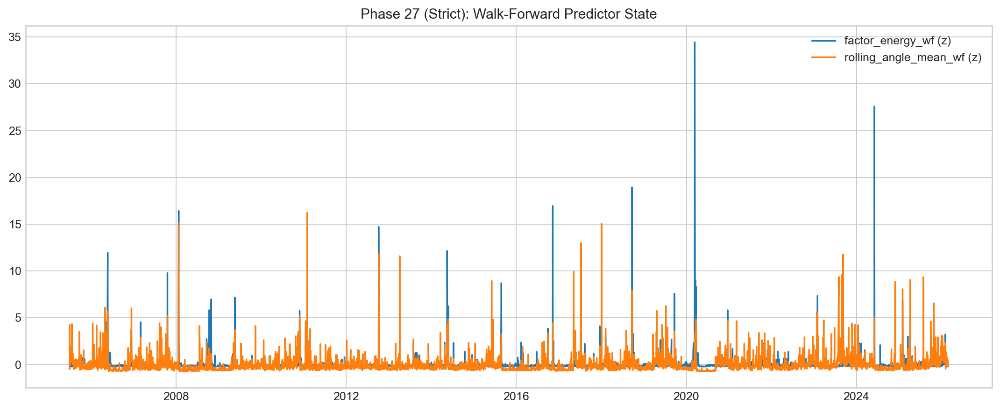

Scope and Data
Entry: I set boundaries first so I don’t hallucinate conclusions later.
I wrote this project to answer a practical question: is volatility structure in this universe actually compressible and stable enough to model, or am I just fitting noise with cool-looking eigenplots? To answer that honestly, I needed tight boundaries: fixed transformed panel logic, full metrics export, and phased diagnostics where each phase can fail independently.
I am working with a large artifact stack, not a tiny notebook toy. The artifact overview itself shows 467 files generated and phase-specific row counts that run into the tens of thousands in mid-pipeline stages and >500k in unassigned aggregates. That volume matters because it means I can verify claims against outputs rather than rely on memory.
What I decided to treat as ground truth
My ground truth here is not “price direction.” It is the behavior of market-wide realized volatility structure. That means the objects I care about are:
- standardized log-volatility panel
- cross-sectional correlation matrix geometry
- eigenspectrum shape and MP separation
- factor dynamics, overlap drift, and angle rotation
- regime segmentation quality and validation behavior
- strict-causality predictive diagnostics for forward risk events
The report files I repeatedly checked while writing
report/all_phases_overview.txtfor global output scalereport/phase_15_metrics.txtfor stability stress and outlier-drop testsreport/phase_19_metrics.txtfor regime count/penalty diagnosticsreport/phase_27_metrics.txtfor strict-causality predictive outcomesfindings_report.mdfor full storyline and earlier interpretations
Data reality check I keep in mind
The panel has long history but uneven coverage over time. In strict-causality phase-27 dataset outputs I saw 5,081 aligned rows with window-level asset counts that vary materially. So I avoid making fragile claims like “single fixed dimensionality always.” I instead frame it as persistent low-dimensional tendency with window-dependent behavior and regime sensitivity.


Why this page exists
If I skip scope discipline, everything else collapses into story-first writing. This page is me forcing myself to stay data-first. The rest of the journal pages are built on that rule.
Shared reference
Dictionary: same terminology map used in every page.